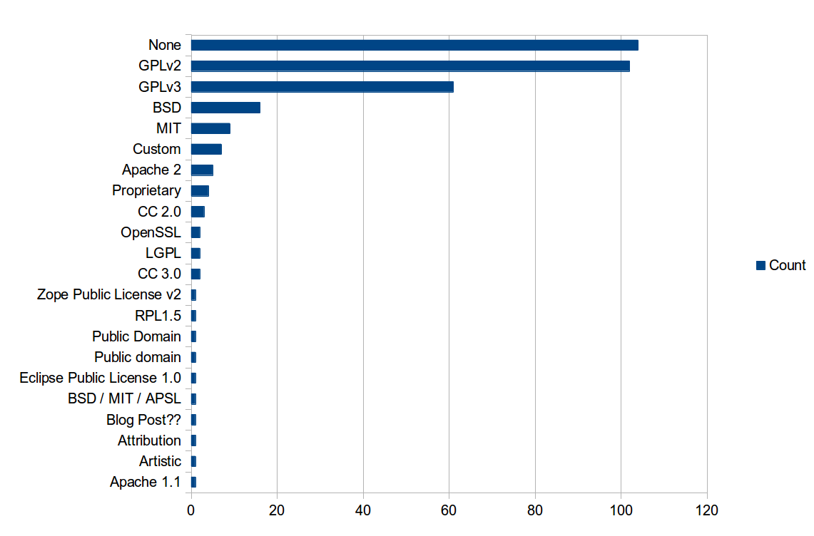
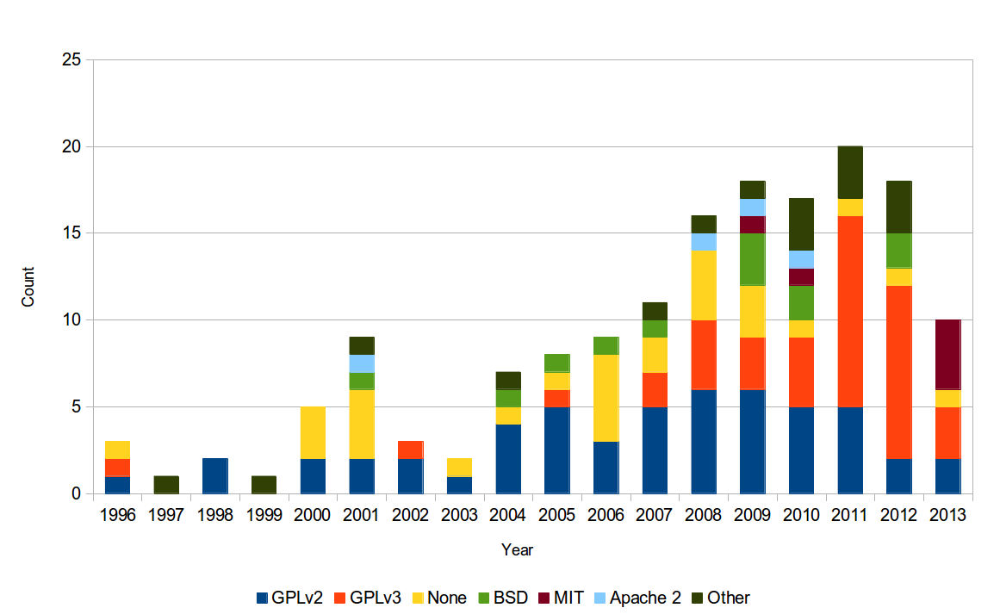
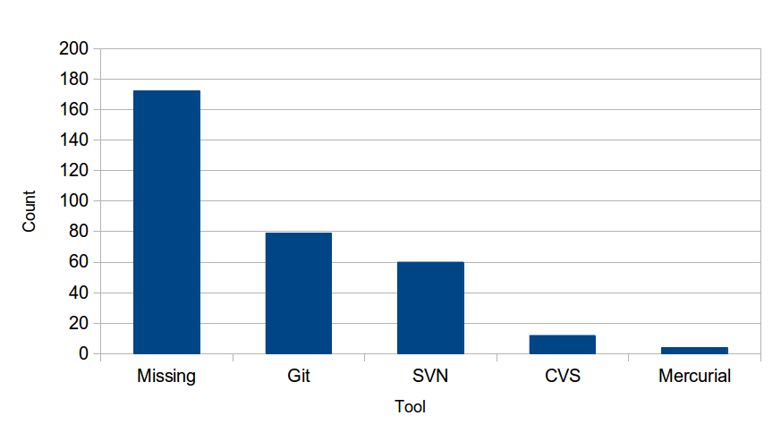

| z, ? | toggle help (this) |
| space, → | next slide |
| shift-space, ← | previous slide |
| d | toggle debug mode |
| ## <ret> | go to slide # |
| c, t | table of contents (vi) |
| f | toggle footer |
| g | toggle follow |
| r | reload slides |
| n | toggle notes |
| p | run preshow |
| P | toggle pause |
| s | choose style |
Email: sam@stelfox.net
Twitter: @SamStelfox
Website: http://www.stelfox.net
Github: sstelfox
Email: gabe@gabekoss.com
Twitter: @granolocks
Website: http://gabekoss.com
Github: granolocks
Twitter: @pwnieexpress
Website: https://pwnieexpress.com
The content of this talk does not reflect the opinion or views of Pwnie Express. They are purely our own.





apt-get onto a kali system.-[ 10.73.73.20/41245 -> 192.168.1.14/443 (syn) ]-
|
| client = 10.73.73.20/41245
| os = Linux 2.6.x
| dist = 0
| params = none
| raw_sig = 4:64+0:0:1460:mss*4,6:mss,sok,ts,nop,ws:df,id+:0
|
`----
What, you think we aren't opinionated?

source: tldrlegal.com
source: tldrlegal.com
source: tldrlegal.com
source: tldrlegal.com


source: http://arstechnica.com/security/2014/02/extremely-critical-crypto-flaw-in-ios-may-also-affect-fully-patched-macs/
# my function def my_function(args) # do some stuff with the args do_some_stuff_with(args) end
def my_function(args)
# Test that the magic argument is being
# set properly before proceeding
if args[:magic] == MAGIC_NUMBER
do_some_stuff_with(args)
else
raise "Not enough Magic!"
end
end

image source: http://www.hanselman.com/
Slides & Research: https://github.com/pwnieexpress/2014-security-tools-review
░wow░░░░░▄░░░░░░░░░░░░░░▄░░░░ ░░░░░░░░▌▒█░░░░░░░░░░░▄▀▒▌░░░ ░░░░░░░░▌▒▒█░░░░░░░░▄▀▒▒▒▐░░░ ░░░░░░░▐▄▀▒▒▀▀▀▀▄▄▄▀▒▒▒many░░ ░░░░░▄▄▀▒░▒▒▒▒▒▒▒▒▒█ideas▐░░░ ░░░▄▀▒▒▒░░░▒▒▒░░░▒▒▒▀██▀▒▌░░░ ░░▐▒▒▒▄▄▒▒▒▒░░░▒▒▒▒▒▒▒▀▄▒▒▌░░ ░░▌░░▌█▀▒▒▒▒▒▄▀█▄▒▒▒▒▒▒▒█▒▐░░ ░▐░░░▒▒▒▒▒▒▒▒▌██▀▒▒░░░▒▒▒▀▄▌░ ░▌░▒▄██▄▒▒▒▒▒▒▒▒▒░░░░░░▒▒▒▒▌░ ▀▒▀▐▄█▄█▌▄░▀▒▒░░░░░░░░░░▒▒▒▐░ ▐▒▒▐▀▐▀▒░▄▄▒▄▒▒▒▒▒▒░▒░▒░▒▒▒▒▌ ▐▒▒▒▀▀▄▄▒▒▒▄▒▒▒▒▒▒▒▒░▒░▒░▒▒▐░ ░▌▒▒▒▒▒▒▀▀▀▒▒▒▒▒▒░▒░▒░▒░▒▒▒▌░ ░▐▒▒▒▒▒▒▒▒▒▒▒▒▒▒░▒░▒░▒▒▄▒▒▐░░ ░░▀▄▒▒▒▒▒▒▒▒▒▒▒░▒░▒░such▒▒▌░░ ░░░░▀▄▒▒▒▒▒▒▒▒▒▒▄▄questions░░ ░░░░░░▀▄▄▄▄▄▄▀▀▀▒▒▒▒▒▄▄▀░░░░░ ░░░░░░░░░▒▒▒▒▒▒▒▒▒▒▀▀░░░░░░░░